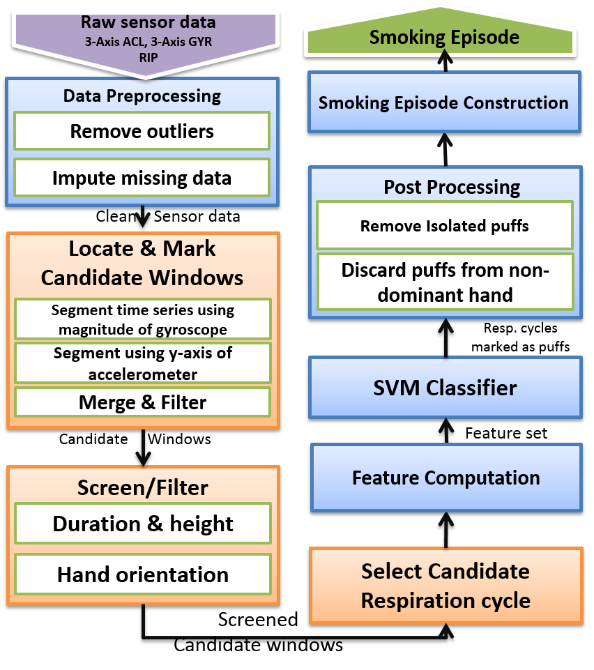

Team members
Faculty
James M. Rehg (Georgia Tech)
Benjamin Marlin (UMass Amherst)
Deepak Ganesan (UMass Amherst)
Emre Ertin (Ohio State)
Santosh Kumar (Memphis)
Susan Murphy (Michigan)
Students
Roy Adams (UMass Amherst)
Ju Gao (Ohio State)
Walter Dempsey (Harvard)
Nazir Saleheen (Memphis)
Big Data Analytics
MD2K’s goal is to create generalizable theory, methods, tools, and software that addresses the major barriers to processing complex mobile sensor data. This is to enable the use of this data by the broader community for biomedical knowledge discovery and just-in-time care delivery. MD2K’s Data Science Research Core seeks to demonstrate the feasibility, utility, and generalizability of the MD2K approach by implementing the entire MD2K data analytics system in the context of two biomedical applications - reducing relapse among abstinent daily smokers and reducing readmission among congestive heart failure (CHF) patients.
All of the tools and software developed by MD2K are freely available as open-source projects for mHealth and data science researchers. Biomedical researchers will be able to install the MD2K software on mobile devices to collect mobile sensor data and the MD2K analytics software on their servers to analyze these data for biomedical discovery.

Specific goals of the DSR Core include:
• Develop general principles, computational methods, and a toolbox for inferring markers (i.e., measures) of patient health, as well as markers of the behavioral, physical, social, and environmental risk factors that are often found in a wide variability of behaviors. In addition, develop methods to address known and unknown confounders, errors in self-report data, and the variable quality and availability of sensor data.
• Develop time series pattern mining algorithms and interactive visualization tools to help biomedical researchers accurately discover vulnerable states from sensor-based markers. This is done with the goal of being able to predict adverse health events, ahead of the onset of adverse clinical events, and to develop online learning algorithms for delivering just-in-time adaptive intervention that can move an individual back to a healthy state.
• Develop and implement a standards-based, interoperable, extensible and open-source big data software platform for efficient implementation of MD2K data analytics developed in the previous two points. This supports both off-line analysis of mobile sensor data at population-scale and online data analysis at the individual scale, and provide a reliable and responsive user experience to biomedical researchers, patients, and care providers.
• Conduct user studies with smokers, CHF patients, researchers, and clinicians to inform the design of MD2K tools and to evaluate their utility, usability, and validity for biomedical research and care delivery.
Some of the major activities that MD2K has undertaken to reach the above-stated goals include:
• Detection of smoking from respiration and wrist-worn accelerometers
•Detecting craving from respiration and ECG data
• Detection of eating events using wrist-worn accelerometers
• Use of iShadow glasses for detecting drowsiness and fatigue
• Automated detection of visual smoking cues using first person vision
• Analysis of compressively sampled ECG data
• Structured prediction models for multivariate time series data with temporally imprecise labels
• Use of a Discovery Dashboard to discover and visualize predictors for adverse events.
• Predicting risk for adverse health events from marker data
• Learning decision rules for timing and content of just-in-time adaptive interventions.
Publications
Jeya Vikranth Jeyakumar, Eun Sun Lee, Zhengxu Xia, Sandeep Singh Sandha, Nathan Tausik and Mani Srivastava.
Deep Convolutional Bidirectional LSTM Based Transportation Mode Recognition. In Proceedings of the 2018 ACM International Joint Conference and 2018 International Symposium on Pervasive and Ubiquitous Computing and Wearable Computers. 2018, 1606–1615. URL, DOI BibTeX@inproceedings{Jeyakumar2018, author = "Jeyakumar, Jeya Vikranth and Lee, Eun Sun and Xia, Zhengxu and Sandha, Sandeep Singh and Tausik, Nathan and Srivastava, Mani", title = "Deep Convolutional Bidirectional LSTM Based Transportation Mode Recognition", booktitle = "Proceedings of the 2018 ACM International Joint Conference and 2018 International Symposium on Pervasive and Ubiquitous Computing and Wearable Computers", year = 2018, series = "UbiComp '18", pages = "1606--1615", address = "New York, NY, USA", publisher = "ACM", __markedentry = "[bbwillms:6]", acmid = 3267529, doi = "10.1145/3267305.3267529", isbn = "978-1-4503-5966-5", keywords = "Deep Learning, Machine Learning, Mobile Sensing, Transportation Modes Classification", location = "Singapore, Singapore", numpages = 10, url = "http://doi.acm.org/10.1145/3267305.3267529" }Matteo Interlandi, Ari Ekmekji, Kshitij Shah, Muhammad Ali Gulzar, Sai Deep Tetali, Miryung Kim, Todd Millstein and Tyson Condie.
Adding data provenance support to Apache Spark. The VLDB Journal, pages 1–21, 2017. URL BibTeX@article{interlandi2017adding, author = "Matteo Interlandi and Ari Ekmekji and Kshitij Shah and Muhammad Ali Gulzar and Sai Deep Tetali and Miryung Kim and Todd Millstein and Tyson Condie", title = "Adding data provenance support to Apache Spark", journal = "The VLDB Journal", year = 2017, pages = "1--21", abstract = "Debugging data processing logic in data-intensive scalable computing (DISC) systems is a difficult and time-consuming effort. Today’s DISC systems offer very little tooling for debugging programs, and as a result, programmers spend countless hours collecting evidence (e.g., from log files) and performing trial-and-error debugging. To aid this effort, we built Titian, a library that enables data provenance—tracking data through transformations—in Apache Spark. Data scientists using the Titian Spark extension will be able to quickly identify the input data at the root cause of a potential bug or outlier result. Titian is built directly into the Spark platform and offers data provenance support at interactive speeds—orders of magnitude faster than alternative solutions—while minimally impacting Spark job performance; observed overheads for capturing data lineage rarely exceed 30% above the baseline job execution time.", publisher = "Springer Berlin Heidelberg", pubstate = "published", tppubtype = "article", url = "https://md2k.org/images/papers/methods/adding-provenance_interlandi.pdf" }Muhammad Ali Gulzar, Matteo Interlandi, Tyson Condie and Miryung Kim.
Debugging Big Data Analytics in Spark with BigDebug. In Proceedings of the 2017 ACM International Conference on Management of Data. 2017, 1627–1630. BibTeX@inproceedings{gulzar2017debugging, author = "Muhammad Ali Gulzar and Matteo Interlandi and Tyson Condie and Miryung Kim", title = "Debugging Big Data Analytics in Spark with BigDebug", booktitle = "Proceedings of the 2017 ACM International Conference on Management of Data", year = 2017, pages = "1627--1630", organization = "ACM", abstract = "Developing Big Data Analytics workloads often involves trial and error debugging, due to the unclean nature of datasets or wrong assumptions made about data. When errors (e.g., program crash, outlier results, etc.) arise, developers are often interested in identify-ing a subset of the input data that is able to reproduce the problem. BIGSIFT is a new faulty data localization approach that combines insights from automated fault isolation in software engineering and data provenance in database systems to find a minimum set of failure-inducing inputs. BIGSIFT redefines data provenance for the purpose of debugging using a test oracle function and implements several unique optimizations, specifically geared towards the iterative nature of automated debugging workloads. BIGSIFT improves the accu-racy of fault localizability by several orders-of-magnitude (∼103 to 107×) compared to Titian data provenance, and improves perfor-mance by up to 66× compared to Delta Debugging, an automated fault-isolation technique. For each faulty output, BIGSIFT is able to localize fault-inducing data within 62% of the original job running time.", pubstate = "published", tppubtype = "inproceedings" }Fred Hohman, Nathan Hodas and Duen Horng Chau.
ShapeShop: Towards Understanding Deep Learning Representations via Interactive Experimentation. In Proceedings of the 2017 CHI Conference Extended Abstracts on Human Factors in Computing Systems. 2017, 1694–1699. URL, DOI BibTeX@inproceedings{Hohman:2017:STU:3027063.3053103, author = "Fred Hohman and Nathan Hodas and Duen Horng Chau", title = "ShapeShop: Towards Understanding Deep Learning Representations via Interactive Experimentation", booktitle = "Proceedings of the 2017 CHI Conference Extended Abstracts on Human Factors in Computing Systems", year = 2017, series = "CHI EA '17", pages = "1694--1699", address = "Denver, Colorado, USA", publisher = "ACM", abstract = "Deep learning is the driving force behind many recent technologies; however, deep neural networks are often viewed as “black-boxes” due to their internal complexity that is hard to understand. Little research focuses on helping people explore and understand the relationship between a user’s data and the learned representations in deep learning models. We present our ongoing work, ShapeShop, an interactive system for visualizing and understanding what semantics a neural network model has learned. Built using standard web technologies, ShapeShop allows users to experiment with and compare deep learning models to help explore the robustness of image classifiers", doi = "10.1145/3027063.3053103", isbn = "978-1-4503-4656-6", keywords = "interactive visualization, learning semantics, model exploration", pubstate = "published", tppubtype = "inproceedings", url = "https://md2k.org/images/papers/methods/ea1694-hohman.pdf" }Dezhi Fang, Fred Hohman, Peter Polack, Hillol Sarker, Minsuk Kahng, Moushumi Sharmin, Mustafa and Duen Horng Chau.
mHealth Visual Discovery Dashboard. In Proceedings of the 2017 ACM International Joint Conference on Pervasive and Ubiquitous Computing and Proceedings of the 2017 ACM International Symposium on Wearable Computers. 2017, 237–240. URL, DOI BibTeX@inproceedings{Fang:2017:MVD:3123024.3123170, author = "Fang, Dezhi and Hohman, Fred and Polack, Peter and Sarker, Hillol and Kahng, Minsuk and Sharmin, Moushumi and al'Absi, Mustafa and Chau, Duen Horng", title = "mHealth Visual Discovery Dashboard", booktitle = "Proceedings of the 2017 ACM International Joint Conference on Pervasive and Ubiquitous Computing and Proceedings of the 2017 ACM International Symposium on Wearable Computers", year = 2017, series = "UbiComp '17", pages = "237--240", address = "New York, NY, USA", publisher = "ACM", abstract = "We present Discovery Dashboard, a visual analytics system for exploring large volumes of time series data from mobile medical field studies. Discovery Dashboard offers interactive exploration tools and a data mining motif discovery algorithm to help researchers formulate hypotheses, discover trends and patterns, and ultimately gain a deeper understanding of their data. Discovery Dashboard emphasizes user freedom and flexibility during the data exploration process and enables researchers to do things previously challenging or impossible to do --- in the web-browser and in real time. We demonstrate our system visualizing data from a mobile sensor study conducted at the University of Minnesota that included 52 participants who were trying to quit smoking.", acmid = 3123170, doi = "10.1145/3123024.3123170", isbn = "978-1-4503-5190-4", keywords = "health informatics, motif discovery, time series data, visual analytics", location = "Maui, Hawaii", numpages = 4, url = "https://md2k.org/images/papers/methods/p237-fang.pdf" }Hamid Dadkhahi and Benjamin Marlin.
Learning Tree-Structured Detection Cascades for Heterogeneous Networks of Embedded Devices. In Proceedings of the 23rd ACM SIGKDD International Conference on Knowledge Discovery and Data Mining. 2017. URL BibTeX@inproceedings{Dadkhahi17, author = "Hamid Dadkhahi and Benjamin Marlin", title = "Learning Tree-Structured Detection Cascades for Heterogeneous Networks of Embedded Devices", booktitle = "Proceedings of the 23rd ACM SIGKDD International Conference on Knowledge Discovery and Data Mining", year = 2017, abstract = "In this paper, we present a new approach to learning cascaded classifiers for use in computing environments that involve networks of heterogeneous and resource-constrained, low-power embedded compute and sensing nodes. We present a generalization of the classical linear detection cascade to the case of tree-structured cascades where different branches of the tree execute on different physical compute nodes in the network. Different nodes have access to different features, as well as access to potentially different computation and energy resources. We concentrate on the problem of jointly learning the parameters for all of the classifiers in the cascade given a fixed cascade architecture and a known set of costs required to carry out the computation at each node. To accomplish the objective of joint learning of all detectors, we propose a novel approach to combining classifier outputs during training that better matches the hard cascade setting in which the learned system will be deployed. This work is motivated by research in the area of mobile health where energy efficient real time detectors integrating information from multiple wireless on-body sensors and a smart phone are needed for real-time monitoring and the delivery of just-in-time adaptive interventions. We evaluate our framework on mobile sensor-based human activity recognition and mobile health detector learning problems.", journal = "23rd ACM SIGKDD International Conference on Knowledge Discovery and Data Mining., 2017", keywords = "Cascaded classification, low-power embedded sensing networks, mobile health", pubstate = "forthcoming", tppubtype = "inproceedings", url = "https://md2k.org/images/papers/methods/p1773-dadkhahi.pdf" }Moustafa Alzantot, Yingnan Wang, Zhengshuang Ren and Mani B Srivastava.
RSTensorFlow: GPU Enabled TensorFlow for Deep Learning on Commodity Android Devices. In Proceedings of the 1st International Workshop on Deep Learning for Mobile Systems and Applications. 2017. URL, DOI BibTeX@inproceedings{alzantot17, author = "Moustafa Alzantot and Yingnan Wang and Zhengshuang Ren and Mani B. Srivastava", title = "RSTensorFlow: GPU Enabled TensorFlow for Deep Learning on Commodity Android Devices", booktitle = "Proceedings of the 1st International Workshop on Deep Learning for Mobile Systems and Applications", year = 2017, abstract = "Mobile devices have become an essential part of our daily lives. By virtue of both their increasing computing power and the recent progress made in AI, mobile devices evolved to act as intelligent assistants in many tasks rather than a mere way of making phone calls. However, popular and commonly used tools and frameworks for machine intelli-gence are still lacking the ability to make proper use of the available heterogeneous computing resources on mobile devices. In this paper, we study the benefits of utilizing the heterogeneous (CPU and GPU) computing resources available on commodity android devices while running deep learning models. We leveraged the heterogeneous comput-ing framework RenderScript to accelerate the execution of deep learning models on commodity Android devices. Our system is implemented as an extension to the popular open-source framework TensorFlow. By integrating our acceler-ation framework tightly into TensorFlow, machine learning engineers can now easily make benefit of the heterogeneous computing resources on mobile devices without the need of any extra tools. We evaluate our system on different android phones models to study the trade-offs of running different neural network operations on the GPU. We also compare the performance of running different models architectures such as convolutional and recurrent neural networks on CPU only vs using heterogeneous computing resources. Our result shows that although GPUs on the phones are capable of of-fering substantial performance gain in matrix multiplication on mobile devices. Therefore, models that involve multi-plication of large matrices can run much faster (approx. 3 times faster in our experiments) due to GPU support.", doi = "https://doi.org/10.1145/3089801.3089805", keywords = "android, Convolution, deep learning, hetero-geneous computing, LSTM, Neural networks, RenderScript, TensorFlow", pubstate = "published", tppubtype = "inproceedings", url = "https://md2k.org/images/papers/methods/p7-alzantot.pdf" }James M Rehg, Susan A Murphy and Santosh Kumar (eds.).
Learning Continuous-Time Hidden Markov Models for Event Data. pages 361–387, Springer International Publishing, 2017. URL, DOI BibTeX@inbook{Liu2017, pages = "361--387", title = "Learning Continuous-Time Hidden Markov Models for Event Data", publisher = "Springer International Publishing", year = 2017, author = "Liu, Yu-Ying and Moreno, Alexander and Li, Shuang and Li, Fuxin and Song, Le and Rehg, James M.", editor = "Rehg, James M. and Murphy, Susan A. and Kumar, Santosh", address = "Cham", isbn = "978-3-319-51394-2", abstract = "The Continuous-Time Hidden Markov Model (CT-HMM) is an attractive modeling tool for mHealth data that takes the form of events occurring at irregularly-distributed continuous time points. However, the lack of an efficient parameter learning algorithm for CT-HMM has prevented its widespread use, necessitating the use of very small models or unrealistic constraints on the state transitions. In this paper, we describe recent advances in the development of efficient EM-based learning methods for CT-HMM models. We first review the structure of the learning problem, demonstrating that it consists of two challenges: (1) the estimation of posterior state probabilities and (2) the computation of end-state conditioned expectations. The first challenge can be addressed by reformulating the estimation problem in terms of an equivalent discrete time-inhomogeneous hidden Markov model. The second challenge is addressed by exploiting computational methods traditionally used for continuous-time Markov chains and adapting them to the CT-HMM domain. We describe three computational approaches and analyze the tradeoffs between them. We evaluate the resulting parameter learning methods in simulation and demonstrate the use of models with more than 100 states to analyze disease progression using glaucoma and Alzheimer's Disease datasets.", booktitle = "Mobile Health: Sensors, Analytic Methods, and Applications", doi = "10.1007/978-3-319-51394-2_19", url = "https://md2k.org/images/papers/methods/LearningC-THMM.pdf" }Roy J Adams and Benjamin M Marlin.
Learning Time Series Detection Models from Temporally Imprecise Labels. In Proceedings of the 20th International Conference on Artificial Intelligence and Statistics. 2017. URL BibTeX@inproceedings{adams17, author = "Roy J. Adams and Benjamin M. Marlin", title = "Learning Time Series Detection Models from Temporally Imprecise Labels", booktitle = "Proceedings of the 20th International Conference on Artificial Intelligence and Statistics", year = 2017, abstract = "In this paper, we consider a new low-quality label learning problem: learning time series detection models from temporally imprecise labels. In this problem, the data consist of a set of input time series, and supervision is provided by a sequence of noisy time stamps corresponding to the occurrence of positive class events. Such temporally imprecise labels commonly occur in areas like mobile health research where human annotators are tasked with labeling the occurrence of very short duration events. We propose a general learning framework for this problem that can accommodate different base classifiers and noise models. We present results on real mobile health data showing that the proposed framework significantly outperforms a number of alternatives including assuming that the label time stamps are noise-free, transforming the problem into the multiple instance learning framework, and learning on labels that were manually re-aligned.", keywords = "machine learning, mobile health, time series", pubstate = "published", tppubtype = "inproceedings", url = "https://md2k.org/images/papers/methods/adams17a.pdf" }Walter H Dempsey, Alexander Moreno, Christy K Scott, Michael L Dennis, David H Gustafson, Susan A Murphy and James M Rehg.
iSurvive: An Interpretable, Event-time Prediction Model for mHealth. In Doina Precup and Yee Whye Teh (eds.). Proceedings of the 34th International Conference on Machine Learning 70. 2017, 970–979. URL, DOI BibTeX@inproceedings{pmlr-v70-dempsey17a, author = "Walter H. Dempsey and Alexander Moreno and Christy K. Scott and Michael L. Dennis and David H. Gustafson and Susan A. Murphy and James M. Rehg", title = "i{S}urvive: An Interpretable, Event-time Prediction Model for m{H}ealth", booktitle = "Proceedings of the 34th International Conference on Machine Learning", year = 2017, editor = "Doina Precup and Yee Whye Teh", volume = 70, series = "Proceedings of Machine Learning Research", pages = "970--979", address = "International Convention Centre, Sydney, Australia", publisher = "PMLR", abstract = "An important mobile health (mHealth) task is the use of multimodal data, such as sensor streams and self-report, to construct interpretable time-to-event predictions of, for example, lapse to alcohol or illicit drug use. Interpretability of the prediction model is important for acceptance and adoption by domain scientists, enabling model outputs and parameters to inform theory and guide intervention design. Temporal latent state models are therefore attractive, and so we adopt the continuous time hidden Markov model (CT-HMM) due to its ability to describe irregular arrival times of event data. Standard CT-HMMs, however, are not specialized for predicting the time to a future event, the key variable for mHealth interventions. Also, standard emission models lack a sufficiently rich structure to describe multimodal data and incorporate domain knowledge. We present iSurvive, an extension of classical survival analysis to a CT-HMM. We present a parameter learning method for GLM emissions and survival model fitting, and present promising results on both synthetic data and an mHealth drug use dataset.", doi = "http://proceedings.mlr.press/v70/dempsey17a.html", file = "dempsey17a.pdf:http\://proceedings.mlr.press/v70/dempsey17a/dempsey17a.pdf:PDF", url = "https://md2k.org/images/papers/methods/dempsey17a.pdf" }Hamid Dadkhahi, Nazir Saleheen, Santosh Kumar and Benjamin M Marlin.
Learning Shallow Detection Cascades for Wearable Sensor-Based Mobile Health Applications. 2016. URL BibTeX@inproceedings{dadkhahi2016learning, author = "Hamid Dadkhahi and Nazir Saleheen and Santosh Kumar and Benjamin M Marlin", title = "Learning Shallow Detection Cascades for Wearable Sensor-Based Mobile Health Applications", year = 2016, abstract = "The field of mobile health aims to leverage recent advances in wearable on-body sensing technol-ogy and smart phone computing capabilities to develop systems that can monitor health states and deliver just-in-time adaptive interventions. How-ever, existing work has largely focused on analyz-ing collected data in the off-line setting. In this paper, we propose a novel approach to learning shallow detection cascades developed explicitly for use in a real-time wearable-phone or wearable-phone-cloud systems. We apply our approach to the problem of cigarette smoking detection from a combination of wrist-worn actigraphy data and respiration chest band data using two and three stage cascades.", journal = "Proceedings of the 33rd International Conference on Machine Learning, 2016", pubstate = "published", tppubtype = "article", url = "https://md2k.org/images/papers/methods/Shallow-Detection-Cascades_Marlin16.pdf" }Roy J Adams, Abinhav Parate and Benjamin M Marlin.
Hierarchical Span-Based Conditional Random Fields for Labeling and Segmenting Events in Wearable Sensor Data Streams. In Proceedings of The 33rd International Conference on Machine Learning. 2016, 334–343. URL BibTeX@inproceedings{adams2016hierarchical, author = "Roy J Adams and Abinhav Parate and Benjamin M Marlin", title = "Hierarchical Span-Based Conditional Random Fields for Labeling and Segmenting Events in Wearable Sensor Data Streams", booktitle = "Proceedings of The 33rd International Conference on Machine Learning", year = 2016, pages = "334--343", abstract = "The field of mobile health (mHealth) has the potential to yield new insights into health and behavior through the analysis of continuously recorded data from wearable health and activity sensors. In this paper, we present a hierarchi-cal span-based conditional random field model for the key problem of jointly detecting discrete events in such sensor data streams and segment-ing these events into high-level activity sessions. Our model includes higher-order cardinality fac-tors and inter-event duration factors to capture domain-specific structure in the label space. We show that our model supports exact MAP in-ference in quadratic time via dynamic program-ming, which we leverage to perform learning in the structured support vector machine frame-work. We apply the model to the problems of smoking and eating detection using four real data sets. Our results show statistically significant improvements in segmentation performance rel-ative to a hierarchical pairwise CRF.", pubstate = "published", tppubtype = "inproceedings", url = "https://md2k.org/images/papers/methods/adams16.pdf" }Nithin Sugavanam, Siddharth Baskar and Emre Ertin.
Recovery guarantees for high resolution radar sensing with compressive illumination. In Compressed Sensing Theory and its Applications to Radar, Sonar and Remote Sensing (CoSeRa), 2016 4th International Workshop on. 2016, 252–256. URL BibTeX@inproceedings{sugavanam2016recovery, author = "Nithin Sugavanam and Siddharth Baskar and Emre Ertin", title = "Recovery guarantees for high resolution radar sensing with compressive illumination", booktitle = "Compressed Sensing Theory and its Applications to Radar, Sonar and Remote Sensing (CoSeRa), 2016 4th International Workshop on", year = 2016, pages = "252--256", organization = "IEEE", abstract = "We present a compressive radar design that combines multitone linear frequency modulated (LFM) waveforms on transmit with classical stretch processor and sub-Nyquist sampling on receive. The proposed compressive illumination scheme has much fewer random elements compared to previously proposed compressive radar designs based on stochastic waveforms, resulting in reduced storage and complexity for implementation. We present bounds on the operator norm and mutual coherence of the sensing matrix of the proposed scheme and show that for sufficiently large number of modulating tones, high resolution range recovery is guaranteed for a sparse scene using sampling rates that scale linearly with the scene sparsity. Simulation results are presented to study recovery performance as a function of system parameters for targets both on and off the grid. In addition, we present experimental results using a high speed digital waveform generator and a custom designed analog stretch processor.", pubstate = "published", tppubtype = "inproceedings", url = "http://ieeexplore.ieee.org/document/7745739/" }J Gao, D Teng and E Ertin.
ECG feature detection using randomly compressed samples for stable HRV analysis over low rate links. In 2016 IEEE 13th International Conference on Wearable and Implantable Body Sensor Networks (BSN). 2016, 165-170. URL, DOI BibTeX@inproceedings{7516253, author = "J. Gao and D. Teng and E. Ertin", title = "ECG feature detection using randomly compressed samples for stable HRV analysis over low rate links", booktitle = "2016 IEEE 13th International Conference on Wearable and Implantable Body Sensor Networks (BSN)", year = 2016, pages = "165-170", abstract = "Wireless biosensors enable continuous monitoring of physiology and can provide early signs of imminent problems allowing for quick intervention and improved outcomes. Wireless communication of the sensor data for remote storage and analysis dominates the device power budget and puts severe constraints on lifetime and size of these sensors. Traditionally, to minimize the wireless communication bandwidth, data compression at the sensor node and signal reconstruction at the remote terminal is utilized. Here we consider an alternative strategy of feature detection with compressed samples without the intermediate step of signal reconstruction. Specifically, we present a compressed matched subspace detection algorithm to detect fiducial points of ECG waveform from streaming random projections of the data. We provide a theoretical analysis to compare the performance of the compressed matched detector performance to that of a matched detector operating with uncompressed data. We present extensive experimental results with ECG data collected in the field illustrating that the proposed system can provide high quality heart rate variability indices and achieve an order of magnitude better RMSE in beat-to-beat heart rate estimation than the traditional filter/downsample solutions at low data rates.", doi = "10.1109/BSN.2016.7516253", keywords = "electrocardiography;feature extraction;medical signal processing;ECG data;ECG feature detection;ECG waveform;beat-to-beat heart;compressed matched subspace detection algorithm;feature detection;low rate links;randomly compressed samples;remote storage;sensor node;signal reconstruction;stable HRV analysis;wireless biosensors;wireless communication;Detectors;Electrocardiography;Feature extraction;Heart rate variability;Monitoring;Wireless communication;Wireless sensor networks", url = "http://ieeexplore.ieee.org/document/7516253/" }Annamalai Natarajan, Gustavo Angarita, Edward Gaiser, Robert Malison, Deepak Ganesan and Benjamin M Marlin.
Domain Adaptation Methods for Improving Lab-to-field Generalization of Cocaine Detection Using Wearable ECG. In Proceedings of the 2016 ACM International Joint Conference on Pervasive and Ubiquitous Computing. 2016, 875–885. URL, DOI BibTeX@inproceedings{Natarajan:2016:DAM:2971648.2971666b, author = "Annamalai Natarajan and Gustavo Angarita and Edward Gaiser and Robert Malison and Deepak Ganesan and Benjamin M. Marlin", title = "Domain Adaptation Methods for Improving Lab-to-field Generalization of Cocaine Detection Using Wearable ECG", booktitle = "Proceedings of the 2016 ACM International Joint Conference on Pervasive and Ubiquitous Computing", year = 2016, series = "UbiComp '16", pages = "875--885", address = "Heidelberg, Germany", publisher = "ACM", abstract = "Mobile health research on illicit drug use detection typically involves a two-stage study design where data to learn detectors is first collected in lab-based trials, followed by a deployment to subjects in a free-living environment to assess detector performance. While recent work has demonstrated the feasibility of wearable sensors for illicit drug use detection in the lab setting, several key problems can limit lab-to-field generalization performance. For example, lab-based data collection often has low ecological validity, the ground-truth event labels collected in the lab may not be available at the same level of temporal granularity in the field, and there can be significant variability between subjects. In this paper, we present domain adaptation methods for assessing and mitigating potential sources of performance loss in lab-to-field generalization and apply them to the problem of cocaine use detection from wearable electrocardiogram sensor data.", doi = "10.1145/2971648.2971666", isbn = "978-1-4503-4461-6", keywords = "classification, cocaine detection, covariate shift, domain adaptation, prior probability shift, Wearable Sensors", pubstate = "published", tppubtype = "inproceedings", url = "https://md2k.org/images/papers/methods/nihms835285_Marlin.pdf" }D Teng and E Ertin.
Learning to Aggregate Information for Sequential Inferences. ArXiv e-prints, 2015. URL BibTeX@article{2015arXiv150807964T, author = "Teng, D. and Ertin, E.", title = "Learning to Aggregate Information for Sequential Inferences", journal = "ArXiv e-prints", year = 2015, abstract = "We consider the problem of training a binary sequential classifier un-der an error rate constraint. It is well known that for known densities, accumulating the likelihood ratio statistics is time optimal under a fixed error rate constraint. For the case of unknown densities, we formulate the learning for sequential detection problem as a constrained density ratio estimation problem. Specifically, we show that the problem can be posed as a convex optimization problem using a Reproducing Kernel Hilbert Space representation for the log-density ratio function. The proposed bi-nary sequential classifier is tested on synthetic data set and UC Irvine human activity recognition data set, together with previous approaches for density ratio estimation. Our empirical results show that the classifier trained through the proposed technique achieves smaller average sampling cost than previous classifiers proposed in the literature for the same error rate.", keywords = "Computer Science - Learning, Statistics - Machine Learning", pubstate = "published", tppubtype = "article", url = "https://md2k.org/images/papers/methods/Learning-to-Aggregate_Ertin16.pdf" }